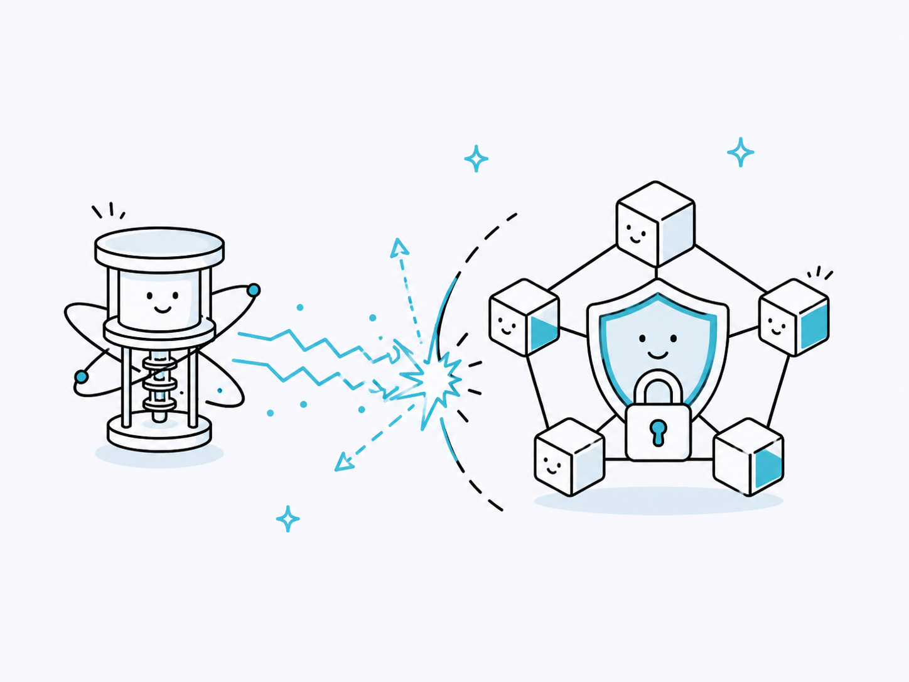
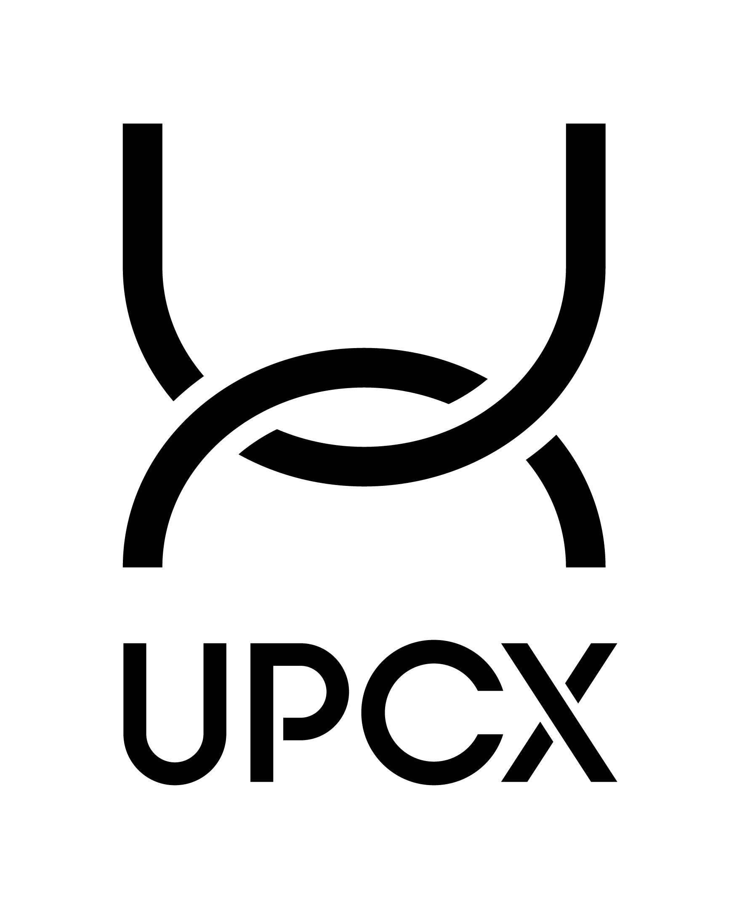
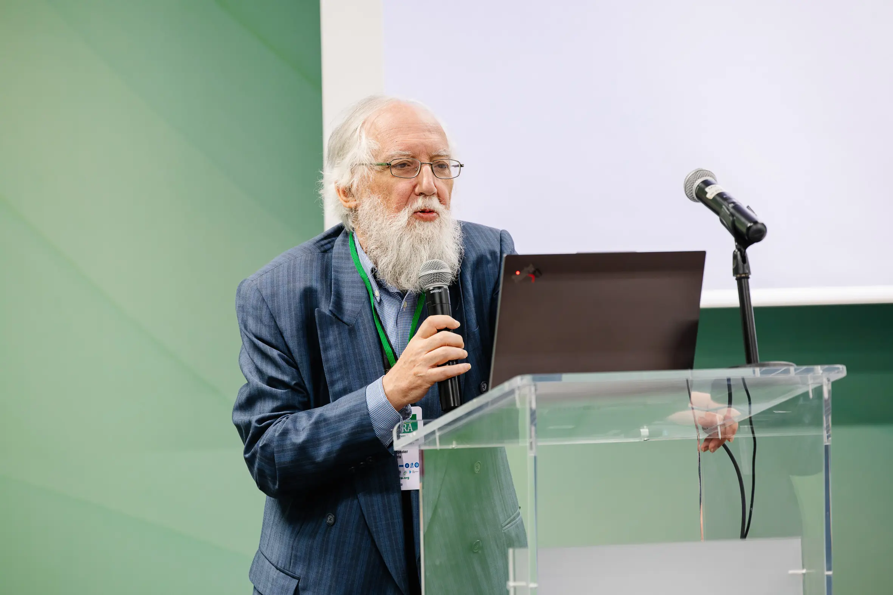
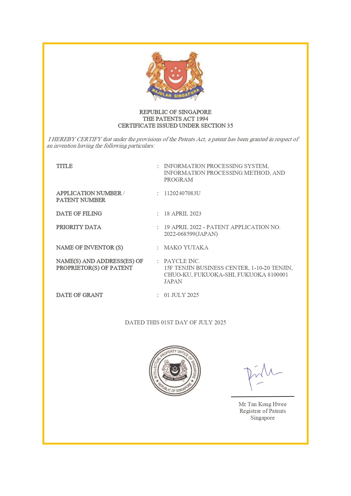
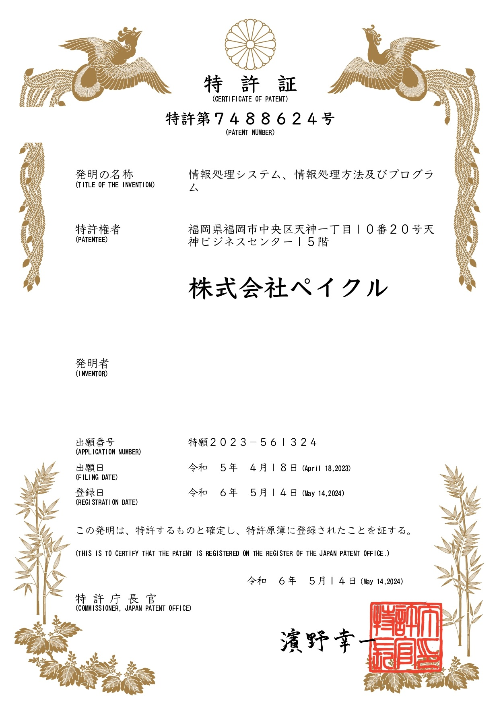
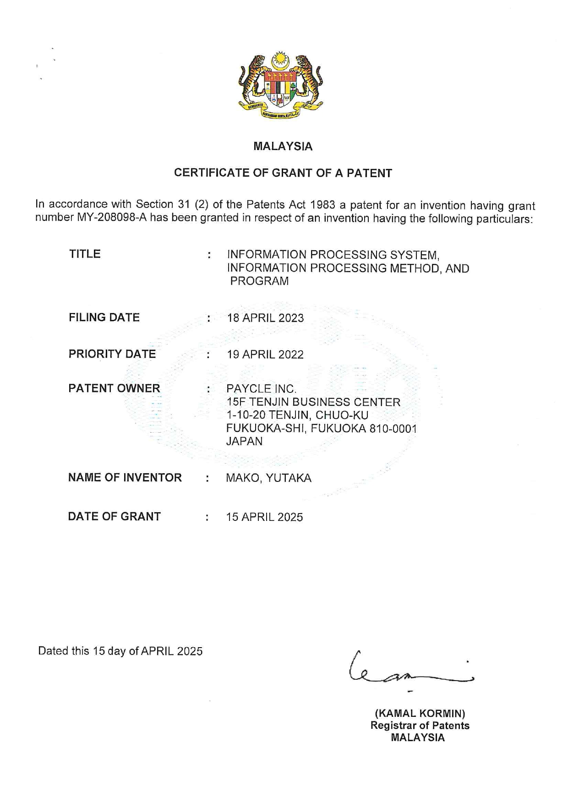

R&D
研究開発
POST-QUANTUM CRYPTOGRAPHY
耐量子暗号への取り組み
量子コンピュータの実現により現在の公開鍵暗号が無効化される——いわゆる「2030年問題」は、 金融決済システムを支えるブロックチェーンにとって喫緊の課題です。 ペイクルは、ブロックチェーンのセキュリティ強化を中心テーマに、 耐量子暗号（Post-Quantum Cryptography, PQC）アルゴリズムの実装研究に取り組んでいます。
-
01
主要方式の分析と適性評価
格子ベース暗号、符号ベース暗号、ハッシュベース署名などPQCの主要方式について、処理速度・鍵サイズ・耐性の強度を分析し、ブロックチェーンへの適性を検討しています。
-
02
実装と評価
候補となるアルゴリズムをコード化してブロックチェーンに実装し、性能を評価します。評価結果をもとに、アルゴリズムの改善や新しい方式の提案へつなげます。
-
03
AI活用の研究
ブロックチェーンにおけるAI活用など、セキュリティ強化と運用効率化に資する周辺テーマの研究も進めています。

JOINT RESEARCH
大学共同研究
2025年4月、レイヤー1ブロックチェーン「UPCX」および長崎総合科学大学との産学連携により、 「グリーンブロックチェーン開発 ペイクル／UPCX共同研究講座」を開設しました。 再生可能エネルギーなど環境・社会課題の解決に向けて、ブロックチェーン技術の応用可能性を追求し、 技術面・制度面の課題解決と社会実装を目指しています。
- 講座名
- グリーンブロックチェーン開発 ペイクル／UPCX共同研究講座
- 研究テーマ
- 社会実装を目指したブロックチェーン技術の応用研究
- 場所
- 長崎総合科学大学 新技術創成研究所
- 担当教授
- 江藤 春日（特命教授）
2026年度は「耐量子アルゴリズム実装の研究」をテーマに、ブロックチェーンが暗号方式に求める特性の検討から、 主要方式の分析・コード化・実装・性能評価までを大学と分担して進めます。 坂井あづみ准教授（博士・理学）を共同研究メンバーに迎え、より実践的で先進的な研究体制の構築を目指しています。 研究の進捗や成果は、本サイトおよび各種プレスリリースにて随時ご紹介します。


ACADEMIC ACTIVITIES
学会発表・国際会議
研究の成果は、学会での発表や国際会議への参画を通じて社会に発信しています。
-
01
センシングフォーラム2025での研究発表
計測自動制御学会（SICE）主催「第42回センシングフォーラム」（2025年9月・群馬大学桐生キャンパス）にて、当社社員2名が「センシングデータ価値化へのアプローチ」「IoTデータのクラウド管理におけるブロックチェーン活用の挑戦と展望」を発表。センシングデータの真正性・追跡性・ガバナンスを高める設計指針と、ブロックチェーンとクラウドの連携によるデータ管理・価値循環の構想を示しました。
-
02
ICRERA2025 オフィシャルパートナー
再生可能エネルギー分野で最も歴史のある国際会議の一つ「ICRERA2025」（2025年10月・ウィーン）に、2年連続でオフィシャルパートナーとして参画。ブロックチェーンの知見と技術を活かし、エネルギー取引の透明性と効率性を高めるソリューションの展開を目指しています。



INTELLECTUAL PROPERTY
特許・知的財産
研究開発の成果は、特許をはじめとする知的財産として蓄積し、 技術の独自性を守りながらパートナーとの協業に活かしています。
-
01
NFTレンタル方式
従来のNFTレンタルには、所有権を一時的に相手へ移転する必要があり、貸主がNFTを失うリスクを伴うという課題がありました。本特許は、NFTの所有権を保持したまま、コンテンツの利用権のみを柔軟かつ安全に提供できる方式です。
-
02
アジア4カ国で権利化
日本に続き、マレーシア・シンガポール・韓国でも特許認定が完了しています。
- 日本（特許7488624）
- マレーシア（MY-208098-A）
- 韓国（KR102895353B1）
- シンガポール（SG11202407083U）
-
03
幅広い応用分野
電子書籍・音楽・映像などの複数ユーザーによる同時利用、メタバース内アイテムや教育用素材の一時的な利用権販売、コンテンツ提供者による継続的なマネタイズモデルの構築など、デジタルコンテンツ流通の幅広い場面への応用が可能です。


